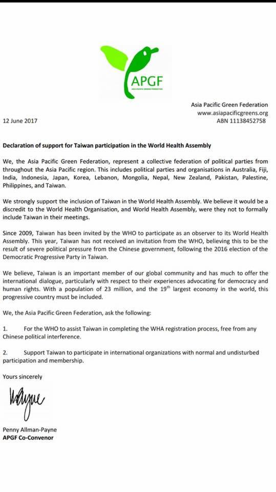

在台灣艱困的國際處境中，亞太綠人聯盟（APGF）表達堅定立場『支持台灣參與WHA』也將支持和協助台灣以正常且不受干擾的方式，參與以及加入國際組織。亞太綠人聯盟（APGF）是國際組織中，少見的，台灣具有正式會員國資格，而中國尚未取得會員資格的國際組織。
前天樹黨收到了來自亞太綠人聯盟（APGF）的來信表示，亞太綠人將全力支持台灣參與國際組織，並且呼籲世界衛生組織（WHO）應該排除中國因素，積極協助台灣參與世界衛生大會（WHA）。
(以下是聲明全文)
【支持台灣加入WHA聲明】
APGF代表全體亞太地區會員國，包含澳洲、斐濟、印度、印尼、日本、韓國、黎巴嫩、蒙古、尼泊爾、紐西蘭、巴基斯坦、巴勒斯坦、菲律賓及台灣在內的環保政黨及團體。
我們非常支持台灣參與WHA，且認為WHO與WHA若不將台灣納入會議的參與，將有損其組織之名譽。
台灣自09年起便受WHO的邀請，以觀察員身分參與WHA。今年台灣尚未受邀，我們認為這是中國政府在台灣2016總統大選後，在國際關係上所實施的嚴厲壓迫。
我們堅信台灣是全球重要的一份子。台灣在提倡民主及人權的特殊相關經驗上，必定能在國際交流中提供有許多貢獻。因此，這個有著2300萬人口、同時是全球第19大經濟體的進步國家，必須被納入會議。
APGF在此請求：
- WHO在排除中國因素干擾的情況下，協助台灣完成參加WHA的註冊程序。
- 支持和協助台灣以正常且不受干擾的方式，參與以及加入國際組織。
謹啟
Penny Allman-Payne
亞太綠人聯盟共同召集人

(游馥榕 譯)